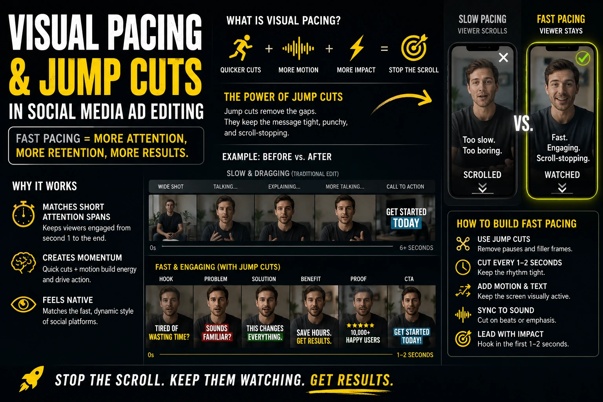
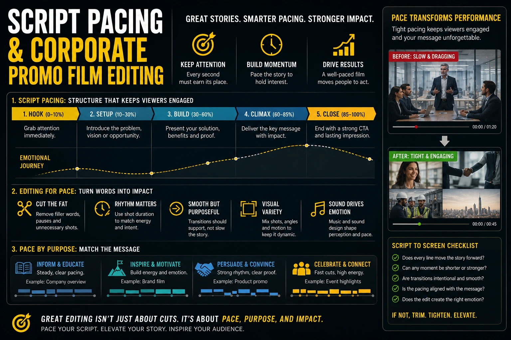

The 2-Second Retention Threshold: Editing Frameworks to Stop the Scroll on Commercial Video Ads
Why Two Seconds Is the Entire Game
Every rupee of paid media budget behind a commercial video ad is being distributed to potential viewers who have not agreed to watch it. They are scrolling a social feed, watching content they chose, in an environment where your ad is an interruption — and their finger is hovering over the swipe action that will end the interruption within two seconds of it beginning.
The 2-second retention threshold is the commercial reality of digital ad production on every major platform where Indian brands are spending money: Instagram Reels, YouTube, Facebook, and LinkedIn. Platform data consistently shows that the majority of view drop-off occurs in the first two seconds — before any brand message, any product claim, any call to action has been communicated. The ad that loses the viewer in two seconds has wasted every rupee spent distributing it to that viewer. The ad that retains the viewer past two seconds has earned the opportunity to do something commercially useful.
This guide covers the specific editing frameworks — opening hook frames, structural jump cuts, visual pacing for social media ads, high-engagement video transitions, and script pacing for conversions — that commercial video production teams use to win the 2-second threshold and build the retention curve that converts.
The Opening Hook Frame: Engineering the First Two Seconds
The opening hook frame is the most important creative decision in any commercial video ad — more important than the script, more important than the production quality, more important than the call to action. A strong hook frame retains the viewer and gives everything else a chance to work. A weak hook frame ensures that the rest of the ad is never seen.
The specific visual and auditory signals that make an opening hook frame effective:
- Visual unexpectedness without confusion. The opening frame should be something the viewer did not expect to see in their feed at that moment — visually surprising, compositionally unusual, or emotionally distinct from the surrounding content. But unexpectedness without context is confusion, not intrigue. The frame should be unexpected and immediately legible: the viewer should not have to work to understand what they are seeing. The best hook frames are unexpected in tone but specific in subject.
- Immediate emotional temperature. The opening frame should communicate the emotional register of the ad — humorous, authoritative, aspirational, empathetic, urgent — before any spoken or written content is processed. This emotional temperature is communicated through the visual content, the colour grade, the audio texture, and the energy of any on-screen person in the frame. A mismatch between the emotional temperature of the opening frame and the emotional register of the ad's message creates dissonance that the viewer resolves by disengaging.
- An open loop rather than a closed statement. The most retentive hook frames introduce a question, tension, or promise that requires resolution — creating an open loop that the viewer's brain is motivated to close by continuing to watch. "The one thing most Indian brands get wrong about their product photography" is an open loop: the viewer who identifies as an Indian brand wants the resolution. A hook frame that opens and closes its point in two seconds gives the viewer no reason to watch the next five.
- On-screen text that works on mute. The majority of Indian social media viewers encounter video ads in environments where the audio is off or inaudible — the commute, a shared office, a family environment. On-screen text in the hook frame that communicates the open loop in five words or fewer ensures that the hook works for mute viewers as well as audio-engaged ones. This is not a subtitle — it is the hook itself, expressed visually.
Video Editing Retention Hacks: The Structural Framework
Beyond the hook frame, video editing retention hacks apply across the full duration of a commercial ad to maintain the viewer engagement earned by the hook. The structural retention framework used by professional commercial video production teams:
The 3-Second Visual Variety Rule
No single uninterrupted shot should exceed three seconds in a social media ad. After three seconds of the same visual, a viewer's attention system begins to signal "this is not changing" — which produces the same disengagement response as slow content. A cut, a text overlay change, or an audio shift every two to three seconds maintains the stimulus variety that the attention system requires to remain engaged.
The Progressive Information Release
Each three-second segment of the ad should deliver one new piece of information — not recap, not elaboration, but genuinely new content that advances the viewer's understanding of the ad's core message. The viewer who feels they are learning something new every three seconds has a reason to keep watching; the viewer who feels the ad is repeating itself has no reason to stay.
The Secondary Hook at Eight Seconds
For ads longer than fifteen seconds, a secondary hook at the eight-second mark — a new open loop, a surprising statement, a shift in visual register — recaptures viewers who survived the first threshold but are beginning to feel the pull of the scroll at the point where the initial hook's intrigue has been partially resolved.
The Emotional Peak Before the CTA
The call to action should arrive immediately after — not before and not well after — the highest emotional engagement point of the ad. An ad that delivers its emotional peak and then continues for another ten seconds before the CTA allows the emotional engagement to dissipate before the conversion request is made. The CTA should arrive while the emotion is still active.

Structural Jump Cuts: The Pacing Tool That Saves Talking-Head Formats
The talking-head format — a person speaking directly to camera about a product, service, or brand — is one of the highest-converting ad formats in digital ad production. It is also one of the most visually static, and therefore one of the most vulnerable to attention drop-off in the middle section of an ad where the hook's energy has dissipated but the emotional peak has not yet arrived.
Structural jump cuts solve this problem by creating visual variety within a single performance without requiring additional footage, multiple camera angles, or complex b-roll coverage. The specific structural jump cut techniques used in professional commercial video production for talking-head ads:
- The content-driven cut. A cut is made every time the speaker begins a new thought or sentence — regardless of the visual jump this creates in the speaker's position. The slight visual discontinuity of the jump cut communicates to the viewer that new content is beginning, which activates the attention system's "new information" response. Content-driven cuts produce the most natural-feeling jump cut rhythm because the cuts align with the narrative structure of the script.
- The angle variation cut. Where multiple camera angles were captured during the speaking performance — even two angles, typically a frontal and a slight profile — cuts between angles create visual variety without creating a jump cut discontinuity. The visual variety of an angle change maintains attention while communicating cinematic production quality.
- The zoom-cut technique. A cut between a medium shot and a close-up (or wide shot and medium) of the same speaking performance creates significant visual variety from a single camera angle. The zoom-cut technique requires the editor to upscale the footage to produce the close-up version, which reduces resolution slightly — but the attention-maintaining value of the zoom-cut outweighs the minor resolution cost for social media ad formats where resolution is less critical than engagement.
- B-roll insertion as a jump cut substitute. Inserting a relevant B-roll clip over a talking-head section serves the same visual variety function as a jump cut while also illustrating the spoken content. For corporate promo films and brand explainer ads, b-roll insertion every three to five seconds across the talking-head sections is the standard technique for maintaining visual engagement without creating the visual discontinuity of a pure jump cut.
Visual Pacing for Social Media Ads: Platform-Specific Frameworks
Visual pacing for social media ads is not a single framework — it varies by platform, audience, and campaign objective. The editing rhythm that retains viewers on Instagram Reels is different from the rhythm that retains YouTube viewers, which is different again from the rhythm appropriate for LinkedIn. Understanding these differences and applying platform-specific pacing is one of the most significant skills separating professional digital ad production from generic video content distribution.
The platform-specific visual pacing framework:
- Instagram Reels and YouTube Shorts (15 to 60 seconds). Maximum cut frequency — no shot longer than two seconds in the first ten seconds. On-screen text on every major spoken point. Audio hook must work as a standalone stimulus without the visual — the audio carries the hook in the majority of cases where Reels autoplay with sound. The first frame must be the most visually arresting image in the entire ad — not a title card, not a logo, not an establishing shot. Pacing should feel faster than comfortable to a person who is watching attentively — because it is calibrated for the distracted attention of a feed-scrolling viewer, not an engaged watcher.
- YouTube skippable in-stream ads (15 to 30 seconds before skip). The first five seconds are critical — the skip button appears at five seconds, and the viewer's decision to skip or stay is made before the skip button arrives. The hook must be established in the first three seconds and the open loop introduced before five. After five seconds, the viewer who has chosen not to skip is more engaged than a Reels viewer — pacing can slow slightly to allow the message to land with more depth. The CTA should arrive no later than 25 seconds for a 30-second ad.
- LinkedIn native video (60 to 90 seconds). LinkedIn's audience has a longer attention window and a higher tolerance for structured information delivery than Instagram or YouTube. Pacing can be more measured — two to four second shots rather than one to two — and the first frame can be a specific, text-led statement rather than a visual hook. On-screen text is essential — LinkedIn autoplay is muted by default. The hook should communicate specific professional value (not generic inspiration) within the first three seconds.
- Facebook feed video (15 to 30 seconds). Square 1:1 format for mobile feed placement — the most common viewing context for Facebook video ads in India. The first three seconds must be captioned and visually self-contained — Facebook feed autoplays on mute and many viewers never enable audio. Pacing similar to Instagram Reels but with slightly less visual velocity — the Facebook feed moves at a slower rate than the Reels feed, and pacing calibrated for Reels can feel uncomfortably fast in a Facebook feed context.
High-Engagement Video Transitions: Function Over Style
High-engagement video transitions are a frequently misunderstood element of commercial video production editing. The most commonly discussed transitions — the swipe, the whip pan, the colour flash, the match cut — are style tools that communicate the aesthetic sensibility of the editor. What makes a transition high-engagement is not its visual complexity but its functional contribution to the viewer's experience of the ad.
The functional criteria for a high-engagement video transition:
- It must add visual energy without adding visual confusion. A transition that requires the viewer to pause and process what has happened is a transition that has consumed the viewer's attention budget without advancing the message. The best transitions are felt as energy rather than noticed as technique.
- It must serve a narrative function — not just a visual one. A transition that marks the boundary between the problem section and the solution section of an ad is a narrative marker as well as a visual event. A transition used purely for aesthetic variety, with no narrative function, is editorial decoration — which costs time, attention, and editing energy that could serve the commercial objective.
- The most reliable high-engagement transition is a clean cut. The clean cut — a direct edit from one shot to the next with no transition effect — is the most reliable high-engagement transition available because it adds zero processing time, creates maximum visual variety, and is universally comprehensible. Complex transitions are justified only when they serve a specific narrative function that a clean cut cannot achieve.
- Whip pans and match cuts for scene transitions, not shot transitions. The whip pan — a rapid camera pan that blurs the frame, used as a transition between scenes — and the match cut — a cut between two shots that share a compositional or movement element — are effective at marking major structural transitions in the ad (from one section to another) without the jarring discontinuity of a direct cut between different visual environments.

Script Pacing for Conversions: The Information Architecture of Persuasion
Script pacing for conversions is the discipline of structuring the spoken and on-screen text of a commercial video ad so that information is released in the sequence and at the density that produces maximum conversion intent at the moment the call to action arrives.
The structural framework for script pacing for conversions in a 30-second commercial video ad:
- Seconds 0 to 3: The hook — problem or promise. State the specific problem the target viewer has or make the specific promise the product delivers. Not "introducing our new product" — "If your product photos are losing you sales on Amazon, this is why." The hook is the problem or the promise, stated with the specificity that makes the viewer feel personally addressed.
- Seconds 3 to 12: The mechanism — why the problem exists or how the promise is delivered. One to three sentences explaining the mechanism behind the hook. Not a product feature list — the specific reason why the problem occurs or the specific way the product delivers the promise. This section is where the viewer decides whether they trust the ad's premise; a credible mechanism explanation is more persuasive than a list of product benefits.
- Seconds 12 to 22: The evidence — proof that the mechanism is real. Social proof, a specific result, a before-and-after, a testimonial fragment, a specific client outcome. Evidence must be specific to be credible — "our clients report higher sales" is not evidence; "a Madurai saree brand reduced their return rate by 30% after adding texture photography" is.
- Seconds 22 to 30: The CTA — the single, specific next step. One action. Not "visit our website, follow us on Instagram, and WhatsApp us for a quote." One specific action that matches the viewer's readiness at this point in the ad — typically a low-friction first step (DM, link click, WhatsApp message) rather than a high-friction commitment (book now, buy now) for a cold audience.
Corporate Promo Films: Applying the Retention Framework to Longer Formats
Corporate promo films — brand films, product launch films, company overview videos — operate on longer timescales than social media ads, but the retention principles apply at every time scale within the film. A 3-minute corporate promo film has a 2-second threshold at the opening, secondary hooks at 15 seconds and 45 seconds, and a mid-film retention challenge at the 1 to 2 minute mark where the initial hook has been resolved but the film still has significant content to deliver.
The retention framework for corporate promo films:
- Chapter structure with visible transitions. A 3-minute film without a visible structure gives the viewer no navigational context — they do not know how much content remains, what section they are in, or whether the information they are receiving is building toward something. Chapter titles (on-screen text markers that announce each section) give the viewer navigational context that reduces the "how much longer?" disengagement at the film's mid-point.
- Narrative re-engagement every 45 to 60 seconds. At every 45 to 60 second interval within the film, introduce a new open loop, a new perspective, or a new piece of evidence that gives the viewer who is beginning to disengage a reason to continue. This is not additional content for its own sake — it is a structural re-engagement event built into the script at the planning stage.
- The visual pacing reset after the mid-point. At the film's mid-point, increase the visual pacing slightly — more cuts, more text overlays, more b-roll variety — to compensate for the natural attention fatigue that accumulates across the first half of the film. The second half of a well-edited corporate promo film should feel slightly faster than the first, not slower.
- The closing hook — not just the closing CTA. The final ten seconds of a corporate promo film should deliver a closing hook — a memorable statement, a surprising final visual, a specific emotional resonance — before the CTA. A film that ends directly on a CTA has missed the opportunity to leave the viewer with an emotional impression that amplifies the CTA's conversion power.
The Production Decisions That Enable Great Editing
Every editing framework described above is significantly easier to execute when the production decisions on the shoot day were made with the editing framework in mind. The most common production failure for Indian brands commissioning commercial video production is treating the shoot day as a content capture event and the edit as a post-production problem — rather than designing the shoot specifically to produce the footage that the editing framework requires.
The shoot-day production decisions that enable the retention editing framework:
- Multiple takes of the hook at the beginning of the shooting day — when the speaker is freshest and the team's energy is highest. The hook is the most important component of the edit; it should have the most footage available for the editor to work with.
- A comprehensive b-roll list that maps to every claim in the script — so that every spoken point in the talking-head section has b-roll available to cut away to at the three-second mark.
- Multiple shooting distances for every speaking performance — at minimum a medium shot and a close-up — so the editor has zoom-cut options without resolution loss.
- Clean in and out points for every b-roll clip — each b-roll sequence should be shot with three to five seconds of clean footage before and after the action, providing the editor with sufficient material for cutting without requiring the action to be frame-perfect at capture.
Conclusion
The 2-second retention threshold is the entire game in commercial video production for social media ads. Every editing decision — the opening hook frame, the structural jump cuts, the visual pacing for social media ads, the high-engagement video transitions, the script pacing for conversions — is a tool for winning the viewer's attention at the threshold and maintaining it through to the call to action.
Digital ad production that treats these editing decisions as afterthoughts — that invests in production quality and then edits for aesthetic preference rather than retention performance — consistently underdelivers on the commercial return that the production investment was designed to generate. The brands with the strongest video ad performance are the ones whose editing frameworks are as deliberately designed as their production setups.
At The PhD Ads, we produce commercial video production and digital ad production for Indian brands with the retention framework built in from script to screen — hook frames, structural jump cuts, platform- specific visual pacing, and script pacing for conversions applied from the first frame to the final call to action.
Key Topics
Ready to Produce Commercial Video Ads That Win the 2-Second Threshold?
At The PhD Ads, we produce commercial video and digital ad content for Indian brands with the retention editing framework built in — from hook frames and structural jump cuts to platform-specific visual pacing and script pacing for conversions, built to stop the scroll and convert the viewer.
Email: team@e2o.in